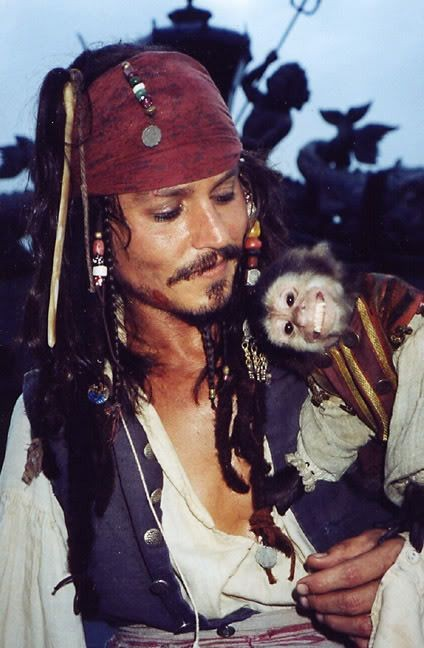
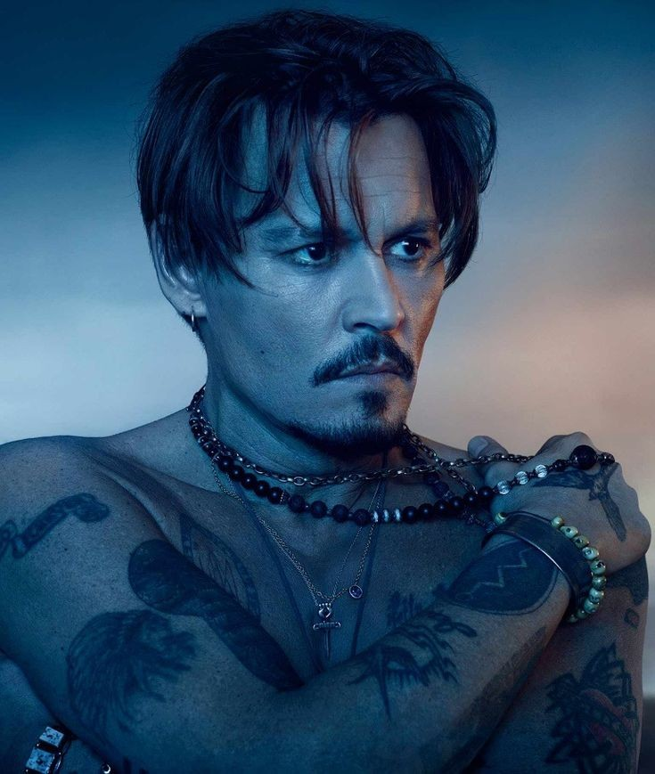

acheivements

Johnny depp

1984–1989: Early roles and 21 Jump Street
1990–2002: Independent films and first collaborations with Tim Burton
2003–2011: Pirates of the Caribbean, commercial and critical success
2012–2021: Career setbacks